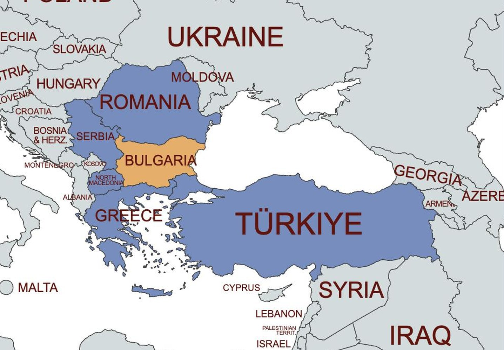
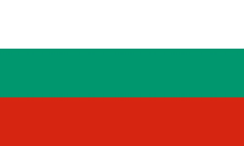
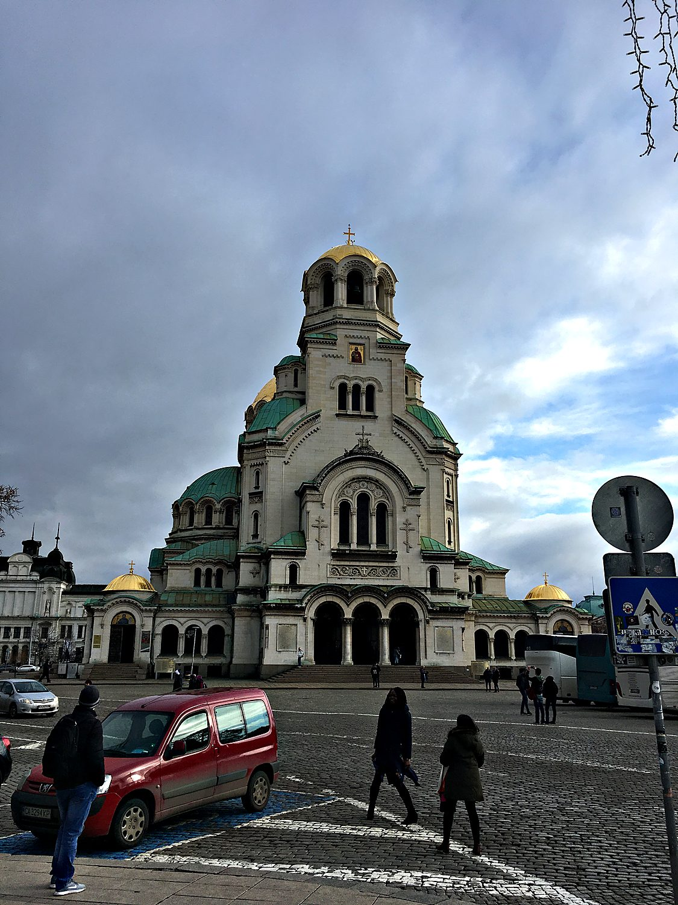
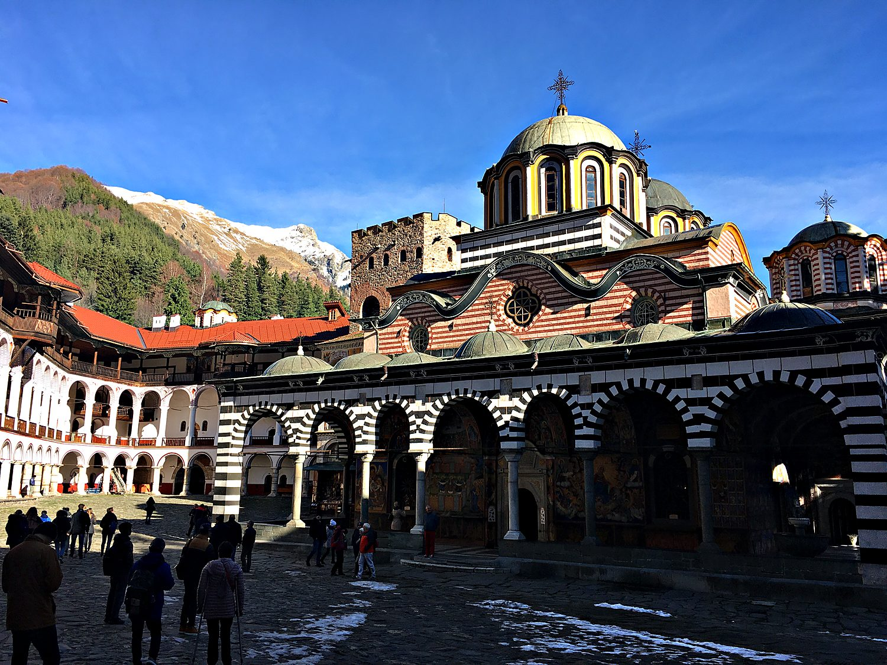
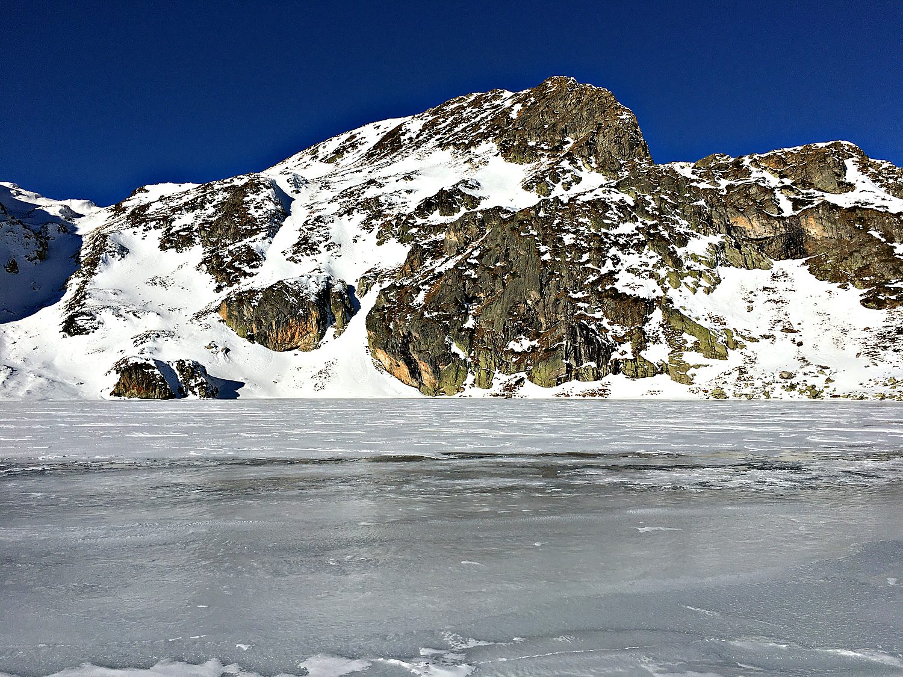

My mother and I visited Bulgaria in December 2019, and Sofia was my first real encounter with the world of the former Eastern Bloc. The city felt palpably post-communist, its hulking socialist ministries sitting cheek by jowl with Roman ruins and gilded Orthodox domes. With time to kill at a bus stop, I taught myself to read the Cyrillic alphabet, which follows a rather satisfying logic. Roughly a quarter of the letters match the Latin script, a quarter are Latin letters in disguise, a quarter are borrowed from Greek, and a quarter are entirely new. From Sofia I set off alone into the snowbound Rila Mountains, riding a gloriously Soviet-era train toward a hike I would have almost entirely to myself.
Sofia, the capital, is one of the oldest cities in Europe, with more than two thousand years of history layered beneath its streets. In Roman times it was Serdica, a city so favoured by the emperor Constantine that he is said to have mused, "Serdica is my Rome." Modern Sofia wears all of its eras at once. Roman ruins sit beneath the metro stations, Ottoman mosques stand near Orthodox cathedrals, and the heavy architecture of the communist decades looms over everything. It makes for a city that is not conventionally beautiful, but endlessly layered and interesting.

Bulgaria's roots run deep. The ancient Thracians lived here, and the First Bulgarian Empire, founded in 681, is one of the oldest states in Europe to have kept its name ever since. It was here, in the 9th and 10th centuries, that scholars developed the Cyrillic alphabet, the script Bulgaria would go on to give the entire Slavic Orthodox world, from Serbia to Russia. That golden age was followed by nearly five centuries of Ottoman rule, which lasted from the late 14th century until 1878. Through all those generations under foreign rule, the Bulgarian language, faith, and identity were kept alive largely in the country's monasteries.

Liberation finally came in 1878, after a brutal war in which Russia and its allies drove out the Ottomans, a debt of gratitude still visible in the city's monuments. The 20th century then brought Bulgaria into the communist orbit, where it became one of the Soviet Union's most loyal satellite states, though never actually part of it. Communism collapsed in 1989, and Bulgaria joined the European Union in 2007. The national flag carries the story quietly in three stripes of white, green, and red, standing for peace, the country's fertile land, and the courage of its people.
The gleaming gold domes of the Alexander Nevsky Cathedral dominate central Sofia, and it ranks among the largest Eastern Orthodox cathedrals in the world. It was built in the early 20th century as a memorial, honouring the roughly two hundred thousand Russian, Bulgarian, and other soldiers who died in the war that freed Bulgaria from Ottoman rule. Its neo-Byzantine bulk, crowned with gilded and copper domes, can hold several thousand worshippers. It was a good reminder that despite half a century of atheist communist rule, Orthodox Christianity still runs strong here.

Tucked into a fold of the Rila Mountains stands the Rila Monastery, the largest and most revered Eastern Orthodox monastery in Bulgaria. Founded in the 10th century in honour of the hermit Saint John of Rila, it became a stronghold of Bulgarian language and culture during the long Ottoman centuries, when so much else was suppressed. Its most striking feature is the arcaded courtyard, its arches painted in bold black-and-white stripes and its walls covered in vivid frescoes. Set against the snowy peaks, this UNESCO World Heritage Site felt like the spiritual heart of the whole country.

The real reason I braved the mountains was to hike toward the Seven Rila Lakes, a chain of glacial lakes strung across the high slopes of the Rila range. In summer the trail is busy with day-trippers, but in the depths of December I had the frozen, silent landscape almost entirely to myself. The lakes lay locked under snow and ice, the peaks stark against a hard blue sky, and the only sound was my own footsteps crunching through the drifts. It was cold, solitary, and utterly beautiful, exactly the kind of stillness I had come looking for. Due to the deep snow, I only made it to five of the seven lakes, and elegantly descended from the mountain by sliding awkwardly on my butt.
